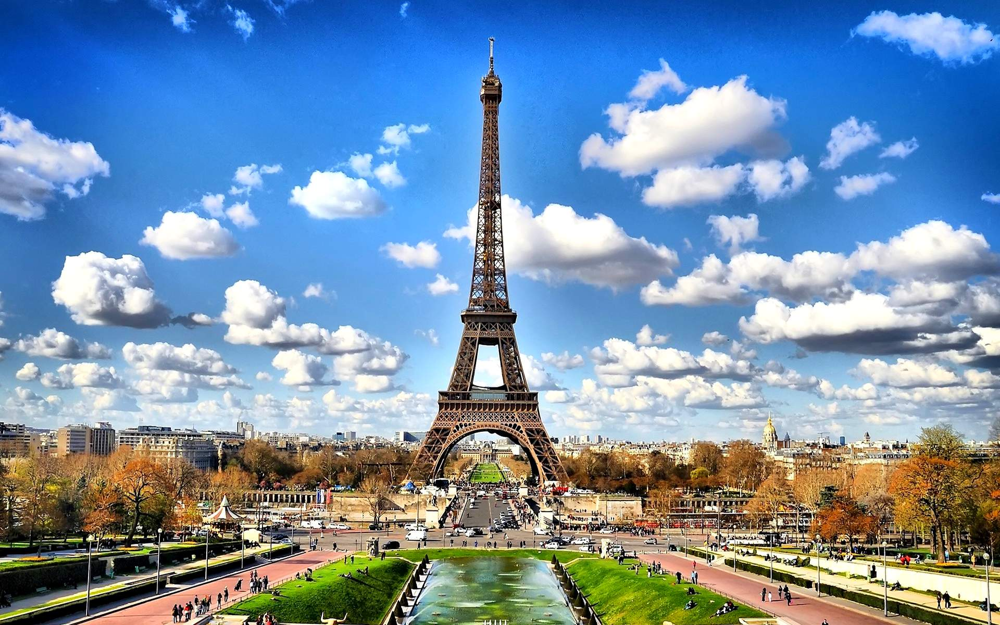
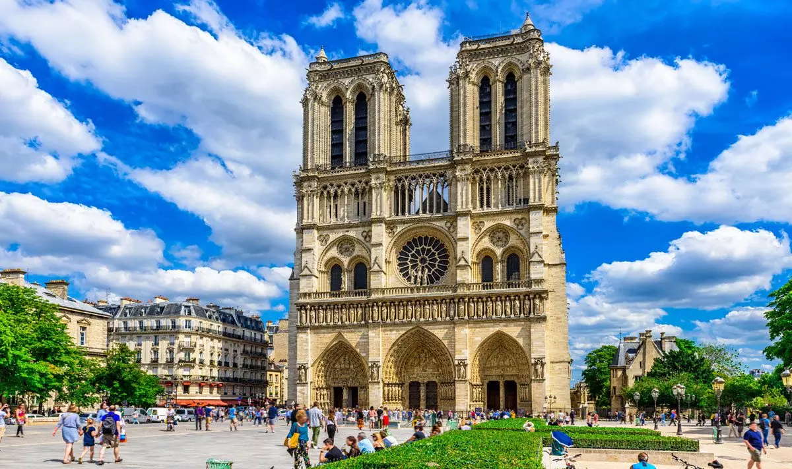

Viaggio a Parigi
Parigi è incantevole in qualunque stagione dell'anno ed emoziona e attrae visitatori da ogni parte del mondo. Basta solo pronunciare il suo nome per far sognare le persone. È una città magica che ha saputo coniugare tradizione e innovazione, dando vita a contrasti talvolta sbalorditivi e dove si scoprono di continuo nuovi angoli da visitare. Chi è già stato a Parigi, non può fare a meno di ritornarci e chi visita la città per la prima volta, ne rimane subito incantato. Per organizzare al meglio il vostro soggiorno a Parigi, abbiamo cercato di rendere questa guida il più esauriente possibile, raccogliendo le migliori idee di viaggio, le informazioni turistiche più richieste, le zone migliori dove dormire e mangiare, i luoghi di interesse da non perdere e le esperienze che ogni persona dovrebbe provare almeno una volta nella propria vita in viaggio a Parigi. È pensata per accompagnarvi in una vera e propria scoperta della città e non solo nei luoghi più noti ma anche nei suoi angoli più nascosti e meno conosciuti. Dovete solo preparare le valigie e partire alla scoperta di una delle città più belle al mondo. Non perdete altro tempo, Parigi vi aspetta!
Viaggi.it è molto più di una guida! Un portale informativo con tante idee di viaggio, informazioni turistiche, itinerari e consigli utili per aiutarti ad organizzare un piacevole soggiorno nella capitale francese. Una piattaforma online interamente dedicata alla destinazione Parigi, dove prenotare biglietti trasporti e musei, attività e visite guidate, trasferimenti e offerte esclusive. Scopri Parigi e organizza al meglio il tuo viaggio con noi!
 